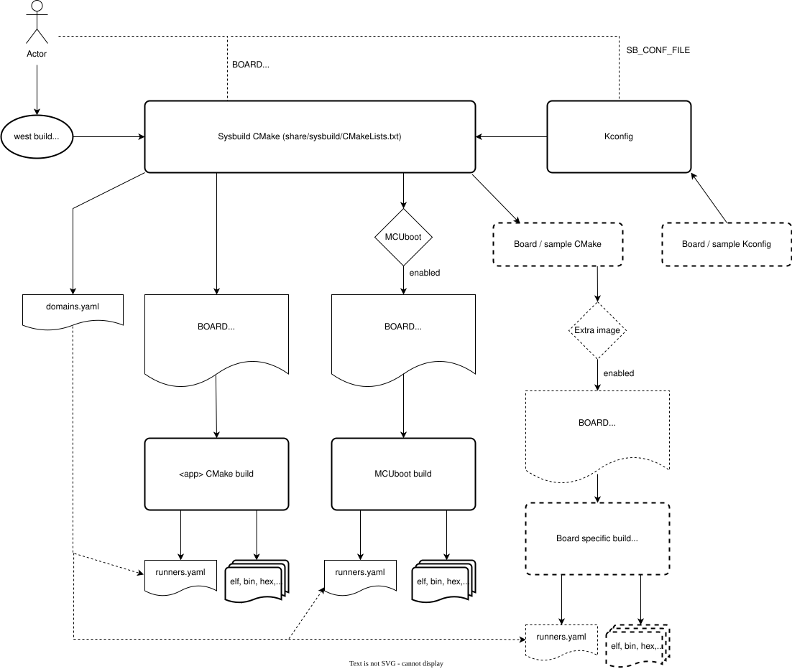

Sysbuild (System build)
Sysbuild is a higher-level build system that can be used to combine multiple other build systems together. It is a higher-level layer that combines one or more Zephyr build systems and optional additional build systems into a hierarchical build system.
For example, you can use sysbuild to build a Zephyr application together with the MCUboot bootloader, flash them both onto your device, and debug the results.
Sysbuild works by configuring and building at least a Zephyr application and, optionally, as many additional projects as you want. The additional projects can be either Zephyr applications or other types of builds you want to run.
Like Zephyr’s build system, sysbuild is written in CMake and uses Kconfig.
Definitions
The following are some key concepts used in this document:
- Single-image build
When sysbuild is used to create and manage just one Zephyr application’s build system.
- Multi-image build
When sysbuild is used to manage multiple build systems. The word “image” is used because your main goal is usually to generate the binaries of the firmware application images from each build system.
- Domain
Every Zephyr CMake build system managed by sysbuild.
- Multi-domain
When more than one Zephyr CMake build system (domain) is managed by sysbuild.
Architectural Overview
This figure is an overview of sysbuild’s inputs, outputs, and user interfaces:
{kind=link}

The following are some key sysbuild features indicated in this figure:
You can run sysbuild either with west build or directly via
cmake.You can use sysbuild to generate application images from each build system, shown above as ELF, BIN, and HEX files.
You can configure sysbuild or any of the build systems it manages using various configuration variables. These variables are namespaced so that sysbuild can direct them to the right build system. In some cases, such as the
BOARDvariable, these are shared among multiple build systems.Sysbuild itself is also configured using Kconfig. For example, you can instruct sysbuild to build the MCUboot bootloader, as well as to build and link your main Zephyr application as an MCUboot-bootable image, using sysbuild’s Kconfig files.
Sysbuild integrates with west’s Building, Flashing and Debugging commands. It does this by managing the Configuration Options, and specifically the
runners.yamlfiles that each Zephyr build system will contain. These are packaged into a global view of how to flash and debug each build system in adomains.yamlfile generated and managed by sysbuild.Build names are prefixed with the target name and an underscore, for example the sysbuild target is prefixed with
sysbuild_and if MCUboot is enabled as part of sysbuild, it will be prefixed withmcuboot_. This also allows for running things like menuconfig with the prefix, for example (if using ninja)ninja sysbuild_menuconfigto configure sysbuild or (if using make)make mcuboot_menuconfig.
Building with sysbuild
As mentioned above, you can run sysbuild via west build or cmake.
Here is an example. For details, see Sysbuild (multi-domain builds) in
the west build documentation.
west build -b reel_board --sysbuild samples/hello_world
Tip
To configure west build to use --sysbuild by default from now on,
run:
west config build.sysbuild True
Since sysbuild supports both single- and multi-image builds, this lets you use sysbuild all the time, without worrying about what type of build you are running.
To turn this off, run this before generating your build system:
west config build.sysbuild False
To turn this off for just one west build command, run:
west build --no-sysbuild ...
Here is an example using CMake and Ninja.
cmake -Bbuild -GNinja -DBOARD=reel_board -DAPP_DIR=samples/hello_world share/sysbuild
ninja -Cbuild
To use sysbuild directly with CMake, you must specify the sysbuild
project as the source folder, and give -DAPP_DIR=<path-to-sample> as
an extra CMake argument or set APP_DIR as environment variable.
APP_DIR is the path to the main Zephyr application managed by sysbuild.
Tip
The environment variables, CMAKE_BUILD_PARALLEL_LEVEL and VERBOSE, can be used to
control the build process when using sysbuild with CMake and ninja.
To set number of jobs for ninja for all sysbuild images, set the CMAKE_BUILD_PARALLEL_LEVEL
environment variable and invoke the build with cmake --build, for example:
CMAKE_BUILD_PARALLEL_LEVEL=<n> cmake --build .
For verbose output of all images, use:
VERBOSE=1 cmake --build .
Configuration namespacing
When building a single Zephyr application without sysbuild, all CMake cache
settings and Kconfig build options given on the command line as
-D<var>=<value> or -DCONFIG_<var>=<value> are handled by the Zephyr
build system.
However, when sysbuild combines multiple Zephyr build systems, there could be Kconfig settings exclusive to sysbuild (and not used by any of the applications). To handle this, sysbuild has namespaces for configuration variables. You can use these namespaces to direct settings either to sysbuild itself or to a specific Zephyr application managed by sysbuild using the information in these sections.
The following example shows how to build Hello World with MCUboot enabled, applying to both images debug optimizations:
west build -b reel_board --sysbuild samples/hello_world -- -DSB_CONFIG_BOOTLOADER_MCUBOOT=y -DCONFIG_DEBUG_OPTIMIZATIONS=y -Dmcuboot_CONFIG_DEBUG_OPTIMIZATIONS=y
cmake -Bbuild -GNinja -DBOARD=reel_board -DAPP_DIR=samples/hello_world -DSB_CONFIG_BOOTLOADER_MCUBOOT=y -DCONFIG_DEBUG_OPTIMIZATIONS=y -Dmcuboot_CONFIG_DEBUG_OPTIMIZATIONS=y share/sysbuild
ninja -Cbuild
See the following subsections for more information.
CMake variable namespacing
CMake variable settings can be passed to CMake using -D<var>=<value> on the
command line. You can also set Kconfig options via CMake as
-DCONFIG_<var>=<value> or -D<namespace>_CONFIG_<var>=<value>.
Since sysbuild is the entry point for the build system, and sysbuild is written in CMake, all CMake variables are first processed by sysbuild.
Sysbuild creates a namespace for each domain. The namespace prefix is the domain’s application name. See Adding Zephyr applications to sysbuild for more information.
To set the variable <var> in the namespace <namespace>, use this syntax:
-D<namespace>_<var>=<value>
For example, to set the CMake variable FOO in the my_sample application
build system to the value BAR, run the following commands:
west build --sysbuild ... -- -Dmy_sample_FOO=BAR
cmake -Dmy_sample_FOO=BAR ...
Kconfig namespacing
To set the sysbuild Kconfig option <var> to the value <value>, use this syntax:
-DSB_CONFIG_<var>=<value>
In the previous example, SB_CONFIG is the namespace prefix for sysbuild’s Kconfig
options.
To set a Zephyr application’s Kconfig option instead, use this syntax:
-D<namespace>_CONFIG_<var>=<value>
In the previous example, <namespace> is the application name discussed above in
CMake variable namespacing.
For example, to set the Kconfig option FOO in the my_sample application
build system to the value BAR, run the following commands:
west build --sysbuild ... -- -Dmy_sample_CONFIG_FOO=BAR
cmake -Dmy_sample_CONFIG_FOO=BAR ...
Tip
When no <namespace> is used, the Kconfig setting is passed to the main
Zephyr application my_sample.
This means that passing -DCONFIG_<var>=<value> and
-Dmy_sample_CONFIG_<var>=<value> are equivalent.
This allows you to build the same application with or without sysbuild using the same syntax for setting Kconfig values at CMake time. For example, the following commands will work in the same way:
west build -b <board> my_sample -- -DCONFIG_FOO=BAR
west build -b <board> --sysbuild my_sample -- -DCONFIG_FOO=BAR
Sysbuild flashing using west flash
You can use west flash to flash applications with sysbuild.
When invoking west flash on a build consisting of multiple images, each
image is flashed in sequence. Extra arguments such as --runner jlink are
passed to each invocation.
For more details, see Multi-domain flashing.
Sysbuild debugging using west debug
You can use west debug to debug the main application, whether you are using sysbuild or not.
Just follow the existing west debug guide to debug the main sample.
To debug a different domain (Zephyr application), such as mcuboot, use
the --domain argument, as follows:
west debug --domain mcuboot
For more details, see Multi-domain debugging.
Building a sample with MCUboot
Sysbuild supports MCUboot natively.
To build a sample like hello_world with MCUboot,
enable MCUboot and build and flash the sample as follows:
west build -b reel_board --sysbuild samples/hello_world -- -DSB_CONFIG_BOOTLOADER_MCUBOOT=y
cmake -Bbuild -GNinja -DBOARD=reel_board -DAPP_DIR=samples/hello_world -DSB_CONFIG_BOOTLOADER_MCUBOOT=y share/sysbuild
ninja -Cbuild
This builds hello_world and mcuboot for the reel_board, and then
flashes both the mcuboot and hello_world application images to the
board.
More detailed information regarding the use of MCUboot with Zephyr can be found in the MCUboot with Zephyr documentation page on the MCUboot website.
Note
The deprecated MCUBoot Kconfig option CONFIG_ZEPHYR_TRY_MASS_ERASE will
perform a full chip erase when flashed. If this option is enabled, then
flashing only MCUBoot, for example using west flash --domain mcuboot, may
erase the entire flash, including the main application image.
Sysbuild Kconfig file
You can set sysbuild’s Kconfig options for a single application using
configuration files. By default, sysbuild looks for a configuration file named
sysbuild.conf in the application top-level directory.
In the following example, there is a sysbuild.conf file that enables building and flashing with
MCUboot whenever sysbuild is used:
<home>/application
├── CMakeLists.txt
├── prj.conf
└── sysbuild.conf
SB_CONFIG_BOOTLOADER_MCUBOOT=y
You can set a configuration file to use with the
-DSB_CONF_FILE=<sysbuild-conf-file> CMake build setting.
For example, you can create sysbuild-mcuboot.conf and then
specify this file when building with sysbuild, as follows:
west build -b reel_board --sysbuild samples/hello_world -- -DSB_CONF_FILE=sysbuild-mcuboot.conf
cmake -Bbuild -GNinja -DBOARD=reel_board -DAPP_DIR=samples/hello_world -DSB_CONF_FILE=sysbuild-mcuboot.conf share/sysbuild
ninja -Cbuild
Sysbuild targets
Sysbuild creates build targets for each image (including sysbuild itself) for the following modes:
menuconfig
hardenconfig
guiconfig
For the main application (as is the same without using sysbuild) these can be
ran normally without any prefix. For other images (including sysbuild), these
are ran with a prefix of the image name and an underscore e.g. sysbuild_ or
mcuboot_, using ninja or make - for details on how to run image build
targets that do not have mapped build targets in sysbuild, see the
Dedicated image build targets section.
Dedicated image build targets
Not all build targets for images are given equivalent prefixed build targets
when sysbuild is used, for example build targets like ram_report,
rom_report, footprint, puncover and pahole are not exposed.
When using Trusted Firmware, the build targets prefixed
with tfm_ and bl2_ are also not exposed, for example: tfm_rom_report
and bl2_ram_report. To run these build targets, the build directory of the
image can be provided to west/ninja/make along with the name of the build
target to execute and it will run.
Assuming that a project has been configured and built using west
using sysbuild with mcuboot enabled in the default build folder
location, the rom_report build target for mcuboot can be ran
with:
west build -d build/mcuboot -t rom_report
For TF-M projects using TF-M targets, the application build directory is used like so:
west build -d build/<app_name> -t tfm_rom_report
Assuming that a project has been configured using cmake and built
using ninja using sysbuild with mcuboot enabled, the rom_report
build target for mcuboot can be ran with:
ninja -C mcuboot rom_report
For TF-M projects using TF-M targets, the application build directory is used like so:
ninja -C <app_name> -t tfm_rom_report
Assuming that a project has been configured using cmake and built
using make using sysbuild with mcuboot enabled, the rom_report
build target for mcuboot can be ran with:
make -C mcuboot rom_report
For TF-M projects using TF-M targets, the application build directory is used like so:
make -C <app_name> -t tfm_rom_report
Adding Zephyr applications to sysbuild
You can use the ExternalZephyrProject_Add() function to add Zephyr
applications as sysbuild domains. Call this CMake function from your
application’s sysbuild.cmake file, or any other CMake file you know will
run as part sysbuild CMake invocation.
A variant image can also added using the ExternalZephyrVariantProject_Add() function which
will duplicate an existing image in the sysbuild project, and allows for slight differences in
configuration. An example use case for this feature is to change the chosen flash node of an image
but having the rest of the configuration identical to the base image. When this is used, neither
sysbuild itself nor the image will have the extra Kconfig targets made for it such as menuconfig,
guiconfig, hardenconfig or traceconfig, as the base image can be used for viewing/adjusting
these instead.
Targeting the same board
To include my_sample as another sysbuild domain, targeting the same board
as the main image, use this example:
ExternalZephyrProject_Add(
APPLICATION my_sample
SOURCE_DIR <path-to>/my_sample
)
This could be useful, for example, if your board requires you to build and flash an SoC-specific bootloader along with your main application.
Targeting a different board
In sysbuild and Zephyr CMake build system a board may refer to:
A physical board with a single core SoC.
A specific core on a physical board with a multi-core SoC, such as nRF5340 DK.
A specific SoC on a physical board with multiple SoCs, such as nRF9160 DK and nRF9160 DK - nRF52840.
If your main application, for example, is built for mps2/an521/cpu0, and your
helper application must target the mps2/an521/cpu1 board target, add
a CMake function call that is structured as follows:
ExternalZephyrProject_Add(
APPLICATION my_sample
SOURCE_DIR <path-to>/my_sample
BOARD mps2/an521/cpu1
)
This could be useful, for example, if your main application requires another helper Zephyr application to be built and flashed alongside it, but the helper runs on another core in your SoC.
Targeting conditionally using Kconfig
You can control whether extra applications are included as sysbuild domains using Kconfig.
If the extra application image is specific to the board or an application,
you can create two additional files: sysbuild.cmake and Kconfig.sysbuild.
For an application, this would look like this:
<home>/application
├── CMakeLists.txt
├── prj.conf
├── Kconfig.sysbuild
└── sysbuild.cmake
In the previous example, sysbuild.cmake would be structured as follows:
if(SB_CONFIG_SECOND_SAMPLE)
ExternalZephyrProject_Add(
APPLICATION second_sample
SOURCE_DIR <path-to>/second_sample
)
endif()
Kconfig.sysbuild would be structured as follows:
source "sysbuild/Kconfig"
config SECOND_SAMPLE
bool "Second sample"
default y
This will include second_sample by default, while still allowing you to
disable it using the Kconfig option SECOND_SAMPLE.
For more information on setting sysbuild Kconfig options, see Kconfig namespacing.
Building without flashing
You can mark my_sample as a build-only application in this manner:
ExternalZephyrProject_Add(
APPLICATION my_sample
SOURCE_DIR <path-to>/my_sample
BUILD_ONLY TRUE
)
As a result, my_sample will be built as part of the sysbuild build invocation,
but it will be excluded from the default image sequence used by west flash.
Instead, you may use the outputs of this domain for other purposes - for example,
to produce a secondary image for DFU, or to merge multiple images together.
You can also replace TRUE with another boolean constant in CMake, such as
a Kconfig option, which would make my_sample conditionally build-only.
Note
Applications marked as build-only can still be flashed manually, using
west flash --domain my_sample. As such, the BUILD_ONLY option only
controls the default behavior of west flash.
Zephyr application configuration
When adding a Zephyr application to sysbuild, such as MCUboot, then the configuration files from the application (MCUboot) itself will be used.
When integrating multiple applications with each other, then it is often necessary to make adjustments to the configuration of extra images.
Sysbuild gives users the ability of creating Kconfig fragments or devicetree overlays that will be used together with the application’s default configuration. Sysbuild also allows users to change Application Configuration Directory in order to give users full control of an image’s configuration.
Zephyr application Kconfig fragment and devicetree overlay
In the folder of the main application, create a Kconfig fragment or a devicetree
overlay under a sysbuild folder, where the name of the file is
<image>.conf or <image>.overlay, for example if your main
application includes my_sample then create a sysbuild/my_sample.conf
file or a devicetree overlay sysbuild/my_sample.overlay.
A Kconfig fragment could look as:
# sysbuild/my_sample.conf
CONFIG_FOO=n
Zephyr application configuration directory
In the folder of the main application, create a new folder under
sysbuild/<image>/.
This folder will then be used as APPLICATION_CONFIG_DIR when building
<image>.
As an example, if your main application includes my_sample then create a
sysbuild/my_sample/ folder and place any configuration files in
there as you would normally do:
<home>/application
├── CMakeLists.txt
├── prj.conf
└── sysbuild
└── my_sample
├── prj.conf
├── app.overlay
└── boards
├── <board_A>.conf
├── <board_A>.overlay
├── <board_B>.conf
└── <board_B>.overlay
All configuration files under the sysbuild/my_sample/ folder will now
be used when my_sample is included in the build, and the default
configuration files for my_sample will be ignored.
This give you full control on how images are configured when integrating those
with application.
Sysbuild file suffix support
File suffix support through the FILE_SUFFIX is supported in sysbuild (see File Suffixes for details on this feature in applications). For sysbuild, a globally provided option will be passed down to all images. In addition, the image configuration file will have this value applied and used (instead of the build type) if the file exists.
Given the example project:
<home>/application
├── CMakeLists.txt
├── prj.conf
├── sysbuild.conf
├── sysbuild_test_key.conf
└── sysbuild
├── mcuboot.conf
├── mcuboot_max_log.conf
└── my_sample.conf
If
FILE_SUFFIXis not defined and bothmcubootandmy_sampleimages are included,mcubootwill use themcuboot.confKconfig fragment file andmy_samplewill use themy_sample.confKconfig fragment file. Sysbuild itself will use thesysbuild.confKconfig fragment file.If
FILE_SUFFIXis set tomax_logand bothmcubootandmy_sampleimages are included,mcubootwill use themcuboot_max_log.confKconfig fragment file andmy_samplewill use themy_sample.confKconfig fragment file (as it will fallback to the file without the suffix). Sysbuild itself will use thesysbuild.confKconfig fragment file (as it will fallback to the file without the suffix).If
FILE_SUFFIXis set totest_keyand bothmcubootandmy_sampleimages are included,mcubootwill use themcuboot.confKconfig fragment file andmy_samplewill use themy_sample.confKconfig fragment file (as it will fallback to the files without the suffix). Sysbuild itself will use thesysbuild_test_key.confKconfig fragment file. This can be used to apply a different sysbuild configuration, for example to use a different signing key in MCUboot and when signing the main application.
The FILE_SUFFIX can also be applied only to single images by prefixing the variable with the
image name:
west build -b reel_board --sysbuild file_suffix_example -- -DSB_CONFIG_BOOTLOADER_MCUBOOT=y -Dmcuboot_FILE_SUFFIX="max_log"
cmake -Bbuild -GNinja -DBOARD=reel_board -DAPP_DIR=<app_dir> -DSB_CONFIG_BOOTLOADER_MCUBOOT=y -Dmcuboot_FILE_SUFFIX="max_log" share/sysbuild
ninja -Cbuild
Adding dependencies among Zephyr applications
Sometimes, in a multi-image build, you may want certain Zephyr applications to
be configured or flashed in a specific order. For example, if you need some
information from one application’s build system to be available to another’s,
then the first thing to do is to add a configuration dependency between them.
Separately, you can also add flashing dependencies to control the sequence of
images used by west flash; this could be used if a specific flashing order
is required by an SoC, a _runner_, or something else.
By default, sysbuild will configure and flash applications in the order that
they are added, as ExternalZephyrProject_Add() calls are processed by CMake.
You can use the sysbuild_add_dependencies() function to make adjustments to
this order, according to your needs. Its usage is similar to the standard
add_dependencies() function in CMake.
Here is an example of adding configuration dependencies for my_sample:
sysbuild_add_dependencies(IMAGE CONFIGURE my_sample sample_a sample_b)
This will ensure that sysbuild will run CMake for sample_a and sample_b
(in some order) before doing the same for my_sample, when building these
domains in a single invocation.
If you want to add flashing dependencies instead, then do it like this:
sysbuild_add_dependencies(IMAGE FLASH my_sample sample_a sample_b)
As a result, my_sample will be flashed after sample_a and sample_b
(in some order), when flashing these domains in a single invocation.
Note
Adding flashing dependencies is not allowed for build-only applications.
If my_sample had been created with BUILD_ONLY TRUE, then the above
call to sysbuild_add_dependencies() would have produced an error.
Merged hex files
Sysbuild supports creating merged hex files, which will be created one per unique board target
in a sysbuild project and can be enabled with SB_CONFIG_MERGED_HEX_FILES.
The output filename format will be merged_<NORMALIZED_BOARD_TARGET>.hex. This is ideal
for creating production images for deployment, it requires that all images output hex files.
If a sysbuild project builds multiple images for the same board target but for different
devices (e.g. 3 images for 3 different boards as part of a test), then this option should remain
disabled. Hex files will be merged as per the flashing order they have been configured in, any
overlapping data from previous addresses that conflicts with later merged hex files will be
overwritten with the later hex file data - see Adding dependencies among Zephyr applications
for how to configure the flashing order of sysbuild images.
Adding non-Zephyr applications to sysbuild
You can include non-Zephyr applications in a multi-image build using the standard CMake module ExternalProject. Please refer to the CMake documentation for usage details.
When using ExternalProject, the non-Zephyr application will be built as
part of the sysbuild build invocation, but west flash or west debug
will not be aware of the application. Instead, you must manually flash and
debug the application.
Configuring sysbuild internal state
Because sysbuild is a CMake project in it’s own right, it runs and sets up itself similar to a
Zephyr application but using it’s own CMake code. This means that some features, for example
specifying variables in an application CMakeLists.txt (such as BOARD_ROOT) will not work,
instead these must be set by using a a module or by using a custom
sysbuild project file as <application>/sysbuild/CMakeLists.txt, for example:
# Place pre-sysbuild configuration items here
# For changing configuration that sysbuild itself uses:
# set(<var> <value>)
# list(APPEND <list> <value>)
# For changing configuration of other images:
# set(<image>_<var> <value> CACHE INTERNAL "<description>")
# Finds the sysbuild project and includes it with the new configuration
find_package(Sysbuild REQUIRED HINTS $ENV{ZEPHYR_BASE})
project(sysbuild LANGUAGES)
An example of adding a BOARD_ROOT:
list(APPEND BOARD_ROOT ${CMAKE_CURRENT_SOURCE_DIR}/../<extra-board-root>)
find_package(Sysbuild REQUIRED HINTS $ENV{ZEPHYR_BASE})
project(sysbuild LANGUAGES)
This will pass the board root on to all images as part of a project, it does not need to be
repeated in each image’s CMakeLists.txt file.
Extending sysbuild
Sysbuild can be extended by other modules to give it additional functionality or include other configuration or images, an example could be to add support for another bootloader or external signing method.
Modules can be extended by adding custom CMake or Kconfig files as normal modules do, this will cause the files to be included in each image that is part of a project. Alternatively, there are sysbuild-specific module extension files which can be used to include CMake and Kconfig files for the overall sysbuild image itself, this is where e.g. a custom image for a particular board or SoC can be added.
Sysbuild and CMake presets
CMake presets can be used with Sysbuild but not all preset macros will work as expected.
Note
Using CMake presets with sysbuild requires CMake version 3.27 or higher.
As described in Sysbuild (System build) then sysbuild is a higher-level build system which means that when CMake presets are used together with sysbuild, then the preset is consumed and processed by sysbuild itself and result is passed to the application.
Running sysbuild with preset.
Here is an example where preset release should be used.
For details, see Sysbuild (multi-domain builds) in the west build documentation.
west build -b reel_board --sysbuild -- --preset=release samples/hello_world
Here is an example using CMake and Ninja.
APP_DIR=samples/hello_world cmake -Bbuild -GNinja -DBOARD=reel_board share/sysbuild
ninja -Cbuild
When using CMake presets with sysbuild then APP_DIR must be set in environment in order
for Sysbuild CMake to be able to include the CMakePresets.json from the main Zephyr
application’s source directory.
Note
As sysbuild changes the top-level cmake project to its own directory, the cmake presets are
parsed from there, the application’s presets are included from this file verbatim.
Therefore relative paths, and macros resolving relative to the source directory will not work as
expected, but as relative to share/sysbuild, for example ${sourceDir}.
The ${fileDir} macro can be used to create portable paths relative to the application’s
directory.